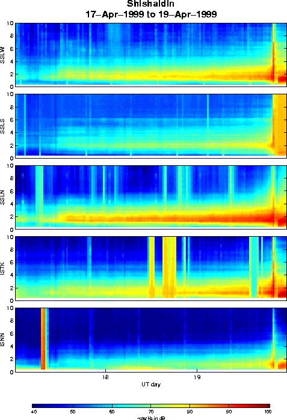

Spectrogram for the period 17-19 April 1999 at Shishaldin. The eruption can be clearly seen as a high-amplitude broadband signal at around 1900 UT on April 19th. Shortly after this, station SSLS died, which is why the signal appears to remain high on that station.
.
Glenn Thompson, 3 May 1999.